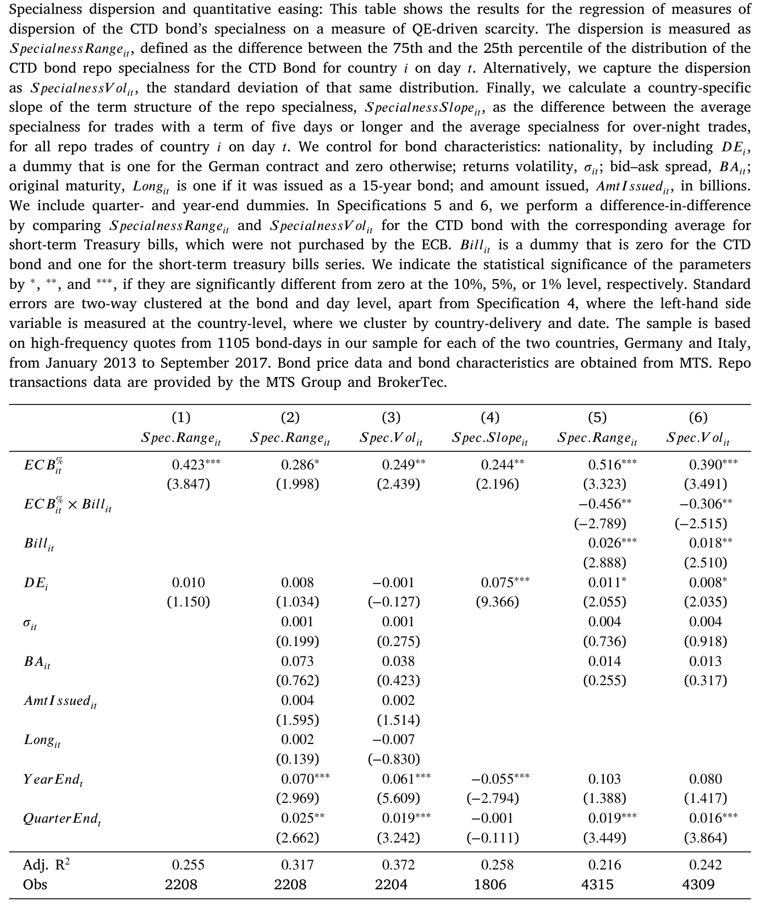
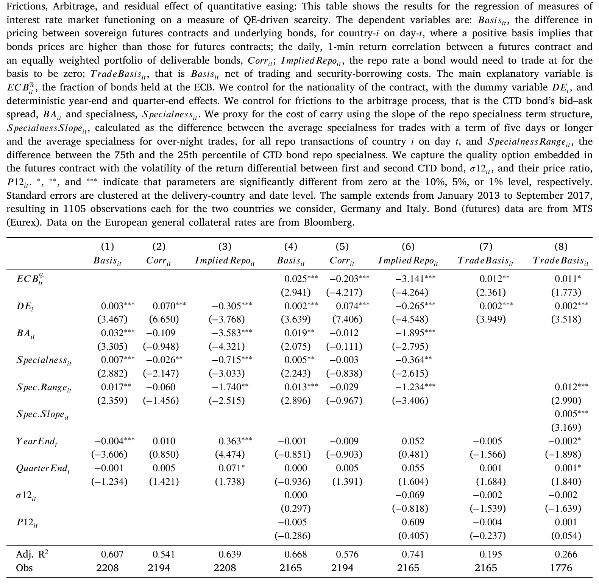
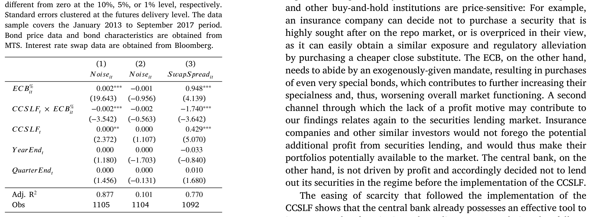
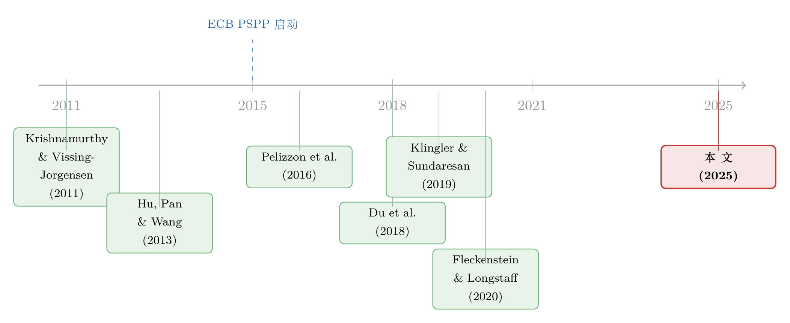

同样的现金流，两个价格：当央行亲手掰断了套利这根杠杆
本文读的是 Pelizzon、Subrahmanyam 与 Tomio (2025, Journal of Financial Economics)：欧洲央行 (ECB) 量化宽松 (Quantitative Easing, QE) 制造的国债「稀缺」，让现金债券与其期货这一对几乎完全相同的资产之间，价格出现了肉眼可见的裂缝。随着 ECB 持仓从 0 升到 15%，德国（意大利）现货与期货的收益相关性从 99% 跌到 94%（95% 跌到 81%），价差从 0 张开到 1.8%（1.5%）。而当央行 2016 年底用「现金抵押证券借贷便利」把债券重新借回市场，这道裂缝又几乎合拢——这说明，制造裂缝的不是别的，正是央行自己买走的那部分债券。
1 一个本不该存在的价差
先从一个让任何学过金融的人都会皱眉的事实说起。
教科书里，套利 (arbitrage) 的标准例子，是同一笔现金流的两种包装之间不该有价差。国债现货和它的期货合约，就是这样一对：你做空一只「最便宜可交割债券 (cheapest-to-deliver, CTD)」、同时做多对应的期货合约，到期把债券交割出去，两条腿几乎完全对冲，单笔交易就能锁定头寸。报价是实盘可成交的，交易经中央对手方清算，执行风险和对手方风险都被压到最低。一价定律 (law of one price) 在这里，本该铁板一块。
可这篇论文给出的第一张图，偏偏画出了一条慢慢张开的口子。横轴是 ECB 持有的主权债占该国国债存量的比例，纵轴是现货与期货之间的偏离。在 QE 之前，这条线贴着零；而当央行的持仓一路爬升，现货和期货——两份几乎一模一样的现金流——的价格，竟越走越远。
于是一个尖锐的问题就摆在桌面上：央行明明是来「帮」市场的，怎么反而把套利这根本该把两个价格焊死的杠杆，给掰断了？
这正是全文要回答的那一个核心问题。它不打算面面俱到地讲 QE 的方方面面，而是死死咬住一件事：QE 带来的稀缺 (scarcity)，如何抬高了套利者面对的成本，从而让一价定律在主权债市场上失了灵。
这件事为什么值得一篇 JFE？因为过去的文献几乎都在证明 QE 对资产价格水平有效——它确实压低了国债收益率。而政策制定者真正担心、却一直缺乏实证的，是 Bernanke (2012)、Cœuré (2015) 反复提到的那个「张力」：压低收益率，会不会以损害市场功能、压制价格发现为代价？本文是第一篇正面回答「会，而且能量化」的论文。
2 故事的舞台：PSPP、CTD 与那条「基差」
要把故事讲清楚，得先认识三个角色。
第一个角色是政策本身。2015 年 1 月，ECB 宣布公共部门购买计划 (Public Sector Purchase Programme, PSPP)，从 3 月 9 日起以每月 500 亿欧元的速度购入主权债，2016 年 4 月到 2017 年 3 月间更加码到 800 亿。购买额按各国在 ECB 资本中的份额（人口与 GDP 的函数，见 Koijen et al., 2021）分摊。两年下来，ECB 持有了约 2160 亿欧元意大利债、3120 亿欧元德国债，分别约占两国存量的 12% 和 15%。本文衡量「稀缺」的口径就极其直白：ECB 持有量占该国国债存量的比例。
第二个角色是套利标的。本文聚焦意大利和德国（法国、西班牙因市场太薄被排除）的长期国债期货。期货卖方可以从一篮子可交割券里挑一只交付，为抹平不同券的价格差，买方只按该券的转换因子 (conversion factor) 支付。在这堆券里，扣掉价格和转换因子后最划算的那只，就是 CTD。本文样本里 CTD 几乎总是基差最低的那只——意大利 99.72%、德国 99.84% 的时间都如此，识别非常干净。
第三个角色，也是全文的度量核心，是基差 (basis)。在交易时点 \(t\)、面向交割日 \(T\) 的合约，套利策略是：以回购利率 \(r\) 借入 CTD、按价格卖出、同时做多期货；到期收下期货卖方交割的 CTD、还给回购对手。把转换因子、应计利息和回购的资金收益都算进去，作者把每天每分钟的基差定义为「CTD 现货价格」与「用期货复制出来的等价组合」之差：
这里有一处关键提醒，作者自己也反复强调：
\(\mathit{Basis}_{m,t}\) 不等于套利利润。它是用中间价、并假设借券现金按抵押利率（Eurex 的 GC Pooling ECB EXTended 利率）计息算出来的，因此里头裹着套利者真实面对的三类摩擦：(i) 交易成本、(ii) 借券成本、(iii) 持有成本。换句话说，基差张开，恰恰是这三类成本被 QE 推高的影子。真正的套利机会，要等到第 5 节把这些成本净掉之后才看得见。
作者还用了第二个、不依赖 CTD 识别、也不必对资金利率表态的度量——现货与期货的 1 分钟收益相关性。它把可交割券按数量加权成一个组合，再与最近月期货的分钟收益求相关：
$$\mathit{Corr}_{it} = \mathrm{Corr}\!\left(\sum_{j=1}^{N^{Del}_{it}} \frac{N^{Del}_{ijt}}{N^{Del}_{it}}\,\frac{\Delta B_{ijtm}}{B_{ijtm}},\; \frac{\Delta F_{itm}}{F_{itm}}\right)$$
两把尺子，一把量「价差水平」，一把量「联动强度」，互为补充。这是个聪明的设计：哪怕你怀疑基差的某个利率假设，相关性这把尺子也几乎不带任何模型味道。
3 三步走：先看现象，再拆成本，最后做因果
本文的论证，干净利落地分成三步。
首先，是现象。 随着 ECB 持仓从 0% 爬到 15%，两份几乎相同现金流之间的收益相关性，德国从 99% 跌到 94%、意大利从 95% 跌到 81%——分别是 QE 前 7 个、8 个标准差的跌幅。别小看这几个百分点：相关性下降意味着用期货对冲现货的能力被削弱。作者算了一笔很直观的账：一个用期货完全对冲的 100 万欧元债券组合，其一日 5% 预期损失 (expected shortfall) 会从 567 欧元飙到 1389 欧元（德国，+145%），意大利则从 1268 欧元升到 2472 欧元（+95%）。与此同时，期货与现货的价差，从两国的 0% 分别张开到 1.8% 和 1.5%。
接着，一个自然的问题是：这道裂缝，到底是哪几块成本撑开的？ 这是第二步，也是把「现象」翻译成「机制」的一步。作者把基差拆给三类摩擦，并逐一量化：
- 交易成本：用现货的买卖价差 (bid–ask spread) 衡量。ECB 持仓每增加 10%，买卖价差就扩大约 1.6 欧分，相当于在 QE 前均值上加了 25%。
- 借券成本：用回购「specialness」衡量——即现金出借方为借到某只特定券，愿意少收多少利息。ECB 持仓每增加 10%，specialness 上升约 28 个基点 (bp)，是 QE 前 5 bp 水平的五倍。
- 持有成本：用 specialness 期限结构的斜率和回购利率波动率衡量，二者都随 QE 显著上升。
然后，这三类成本被放进对基差的回归里——它们正向预测了现货与期货的偏离，合起来解释了基差变动的 54%–65%。一条逻辑链就此闭合：央行买债 → 债券稀缺 → 三类成本抬升 → 套利变贵 → 一价定律失灵。

Table 4

Table 5
这里值得停一下：本文最漂亮的地方，不是「发现价差」，而是把价差拆解成可观测、可回归的成本，再证明这些成本几乎能把价差讲完。这让「QE 损害了价格发现」从一句担忧，变成了一个能用系数说话的命题。
但真正关键的一步在于第三步：怎么证明撑开裂缝的是「稀缺」，而不是别的？ 因为有一个极具竞争力的替代解释正等在门口。
4 识别：一次政策转向，把「稀缺」和「资产负债表」分开
替代解释来自一条很有分量的文献。Du et al. (2018) 在抛补利率平价 (covered interest rate parity, CIP)、Fleckenstein 与 Longstaff (2020) 在美国期货—现货基差上都指出：交易商的资产负债表约束 (balance sheet costs) 本身就能撑开套利价差——监管让中介「租用」资产负债表变贵，价差自然就开。那么本文看到的裂缝，会不会其实是资产负债表成本，而非稀缺？
作者用两记组合拳把这个替代解释挡了回去。
第一记，是直接度量资产负债表成本。借用 Fleckenstein 与 Longstaff (2020) 基于「年末无担保拆借溢价」构造的资产负债表使用成本，作者发现：约束确实有贡献，但不是他们观测到的错定价动态的主要驱动。
第二记，也是全文识别的命门，于是反转出现——作者找到了一个能把「稀缺」单独拎出来的外生政策变化。2016 年 12 月 15 日，ECB 启动现金抵押证券借贷便利 (cash-collateralized securities lending facility, CCSLF)：此前国家央行的证券借贷都是「债券换债券」，并不增加市场上可借证券的净供给；而 CCSLF 是「债券换现金」，等于把 ECB 买走、锁住的那部分债券，重新放回市场可借的池子里（Arrata et al., 2020；Roh, 2022）。
这就构成了一个近乎理想的实验：政策只动了「稀缺」这一个旋钮，资产负债表约束、监管环境等都没变。如果撑开裂缝的真是稀缺，那么 CCSLF 之后裂缝就该合拢。结果正是如此——CCSLF 实施后，套利限制缓解、国债市场功能改善，第一张图里那条张开的口子明显回收。一推一收，「稀缺是主因」这个结论就钉死了。

Table 9: Second, a significant share of the assets held by the ECB was, in fact
为了再加一道保险，作者还做了一个反事实 (counterfactual)：期货期权的看跌—看涨平价 (put–call parity)。这是一条只涉及衍生品、不涉及做空现货国债的套利关系——也就是说，它不会被 QE 制造的现货稀缺所影响。如果本文的故事成立，这条关系就不该出现套利受阻的迹象。事实也确实如此：纯衍生品套利安然无恙。这反过来说明，被掰断的恰恰是那条需要借入、做空现货国债的腿。
而且，作者顺手把结论推广了：任何需要做空现货主权债的套利交易都会中招。他们用偏离拟合收益率曲线的期限结构套利 (term structure arbitrage)（Hu et al., 2013）和互换利差 (swap spread)（Klingler 与 Sundaresan, 2019）验证了这一点。这一笔，把一个「期货—现货」的特例，抬升成了一个关于稀缺与套利的一般命题。
5 数据
把这套故事撑起来的，是一组分辨率极高的数据，时间跨度 2013–2017 年（含 2015–2017 三年 QE 和两个对照年）：
- 现货国债的报价、订单、成交，来自
MTS Group——一个自动化、报价驱动的电子限价交易商间市场，带毫秒时间戳； - 回购交易（含 special repo）来自
MTS Repo与BrokerTec（NEX Group），用来度量借券成本； - 期货的毫秒级成交与报价，来自 Eurex 经
Thomson Reuters； - 抵押融资利率用
Bloomberg的 GC Pooling ECB EXTended Basket 代理（Mancini et al., 2015）； - ECB 各国月度持仓来自 ECB，与各国国债存量相除，得到「稀缺」度量。
观测单位是「国家—日」（基差和相关性都按日聚合），覆盖每国 20 个合约。
6 文献脉络
把这篇论文放回它的来路，才看得清它补上的是哪一块拼图。
最早的一支，是 QE 对目标资产价格的影响。Gagnon et al. (2011)、Krishnamurthy 与 Vissing-Jorgensen (2011)、D'Amico et al. (2012)、D'Amico 与 King (2013) 这一批，确立了 QE 确实压低了国债收益率，并提炼出「稀缺」这一渠道——QE 减少国债供给、推高其价格（Krishnamurthy 与 Vissing-Jorgensen, 2013）。在欧洲一侧，Eser 与 Schwaab (2016)、Koijen et al. (2021) 做了对应的工作。

接着，文献从「价格水平」转向「市场质量」。一支看 QE 如何影响国债流动性（本文作者之一参与的 Pelizzon et al., 2016，正是这一支的代表）；另一支看 QE 如何影响回购定价与稀缺（Arrata et al., 2020；Corradin 与 Maddaloni, 2020；Roh, 2022）。
与此同时，另一条几乎平行的大河在讨论资产负债表成本如何撑开套利价差：Du et al. (2018) 之于 CIP，Fleckenstein 与 Longstaff (2020) 之于期货—现货基差，Anderson et al. (2021)、Hazelkorn et al. (2022) 之于更广义的一价定律偏离，Klingler 与 Sundaresan (2019) 之于互换利差。本文的巧妙，正是把这两条大河接上：它承认资产负债表成本有份，却用 CCSLF 这个外生政策变化证明，稀缺才是这次错定价的主因；并进一步暗示，稀缺本身可能就是抬高资产负债表使用成本的一个来源。
把本文放在坐标系里：它是第一篇用套利机制作为透镜、把「QE → 稀缺 → 价格发现受损」这条因果链量化到系数、并给出政策旋钮（CCSLF）的论文。
（关于央行干预如何在另一类市场里制造价格楔子与套利机会，可对照读《一封邮件，如何掀动一国的汇率与套利定价？》；关于国债供给如何挤压做市能力、外溢到相邻市场，见《一张资产负债表，两个市场：当国债拍卖悄悄挤掉了 MBS 的做市能力》；而把「主权债的一价定律」放到德国孪生国债上称重的，是《绿色溢价真的归零了吗？》。)
7 评论与延伸（Q&A + 研究方向）
(a) 几个可能的疑问
Q：基差不等于套利利润，那「价格发现受损」这个说法会不会被夸大？
不会，反而更稳。正因为基差里裹着交易、借券、持有三类真实成本，它衡量的恰恰是「套利者把两个价格拉回一致要花多大代价」。代价越大，价格越拉不回来——这正是价格发现受损的定义。而且第二把尺子（收益相关性）完全不依赖这些利率假设，两者结论一致，相互背书。
Q：CCSLF 之后裂缝合拢，会不会只是同期市场环境变好的巧合？
这是最该担心的识别问题。作者的防线有两层：一是 CCSLF 只动了「可借证券净供给」这一个旋钮（此前的国家央行借贷是债券换债券，不增净供给）；二是反事实——只涉及衍生品、不做空现货的期权看跌—看涨平价，全程没有受阻迹象。如果是大环境变好，这条平价关系本不该「免疫」。
Q：和资产负债表成本那套解释，到底怎么撇清的？
不是二选一，而是分主次。作者用 Fleckenstein 与 Longstaff (2020) 的资产负债表使用成本度量，承认它「有贡献但非主因」；再用 CCSLF 这个只动稀缺、不动资产负债表约束的政策，识别出稀缺是主要驱动。更深一层，他们指出稀缺本身可能就是资产负债表成本的一个决定因素。
Q：为什么是意大利和德国，而不是把欧元区都放进来？
因为识别需要足够深、足够液的市场。法国和西班牙的国债 special repo 占比不到 1%（德意合计超过 70%），西班牙期货 2015 年底才推出、晚于对照期。样本选择是为干净识别服务的，但也意味着结论的外推要谨慎——尤其是流动性本就更差的边缘国债。**
Q：意大利的相关性掉得（95%→81%）比德国（99%→94%）狠得多，这说明什么？
说明同样的稀缺冲击，作用在信用与流动性更弱的资产上更剧烈。意大利债本就更「special」、更难借，QE 一抽走供给，借券成本和价差的弹性都更大。这其实预告了一个有意思的横截面：稀缺的代价，可能与资产本身的流动性/信用状况互补。
Q：这对货币政策传导意味着什么？
意味着 QE 在压低国债收益率的同时，可能削弱了从国债到「靠套利与之挂钩的其他利率工具」的传导。欧元区有约 10 万亿欧元主权债被广泛用作抵押品，期限结构一旦失真，市场参与者的在险资本就上升、对冲能力下降。作者给出的政策含义很具体：把证券借贷便利当作 QE 工具箱里的「第二根杠杆」，用它调节稀缺，从而在压低收益率的同时守住市场功能。
(b) 几个可能的研究问题与提案
1. 把这套机制搬到美国公司债 / 信用市场。 【经济故事】美联储在 2020 年也下场买公司债（SMCCF/PMCCF）。如果稀缺渠道普适，那么被买走、被锁住的公司债，其 CDS-bond basis、ETF-NAV 偏离、做空成本（借券费）也该随央行持仓上升而张开。【可行性】中。所需数据：TRACE 成交、Markit CDS、ETF 一级申赎与借券市场（如 IHS Markit Securities Finance）。识别可借美联储分券种、分日的购买明细做强度变化，但缺一个像 CCSLF 那样干净的「反向」政策，因果会弱一些。
2. 外资持有人 vs. 央行：谁的「价格不敏感」更伤套利？ 【经济故事】本文把央行称作「终极的价格不敏感机构投资者」。一个自然的对照是外国官方持有人（外国央行、主权基金）——同样买了就锁、对价格不敏感。把持有人结构拆成「央行 / 外资官方 / 价格敏感私人」，看谁推高 specialness、谁撑开基差。【可行性】中高。数据：TIC、ECB SHS（Securities Holdings Statistics）持有人分部门数据 + 回购 specialness。识别可用持有人构成的外生变动（如指数纳入、储备再平衡）。
3. 稀缺的横截面：什么样的债券最「受伤」？ 【经济故事】意大利掉得比德国狠，提示稀缺代价与资产的可借性、信用、CTD 地位互补。能不能在券层面把 specialness 弹性回归到「期初浮动量、是否 CTD、剩余期限」上，画出一条「稀缺—代价」曲线？【可行性】高。数据本文已有（MTS/BrokerTec 券级 special repo），主要是把聚合回归下沉到券—日层面。
4. CCSLF 的「剂量反应」与最优借贷定价。 【经济故事】本文证明 CCSLF 缓解了限制，但没回答「借多少、定价多高才最优」。ECB 借贷利率被设为「存款便利利率减 30 bp 与市场回购利率的较小值」——这个 30 bp 楔子是不是恰到好处？【可行性】中。数据：ECB 证券借贷的逐券逐日借出量与费率。识别可借便利上限、定价公式的历次调整做断点/事件研究，估出借贷供给对 specialness 与基差的弹性，给央行一个可校准的政策函数。
5. 把「期限结构失真」接到实体决策上。 【经济故事】作者指出期限结构的不确定性会抬高在险资本、影响投资与消费（Baker et al., 2016）。能否把 QE 期间国债期限结构的「噪声」（à la Hu et al., 2013）作为冲击，去看以国债为抵押的融资链条（回购、衍生品保证金）是否收紧、进而压到企业融资？【可行性】中低。需要把宏观层面的期限结构失真，映射到微观的抵押—融资数据，识别难度较高，但方向新颖。
参考文献
- Arrata, W., Nguyen, B., Rahmouni-Rousseau, I., Vari, M. (2020). The scarcity effect of QE on repo rates: Evidence from the euro area. Journal of Financial Economics 137(3), 837–856.
- Baker, S.R., Bloom, N., Davis, S.J. (2016). Measuring economic policy uncertainty. Quarterly Journal of Economics 131(4), 1593–1636.
- D'Amico, S., English, W., López-Salido, D., Nelson, E. (2012). The Federal Reserve's large-scale asset purchase programmes: Rationale and effects. (as cited).
- D'Amico, S., King, T.B. (2013). Flow and stock effects of large-scale treasury purchases: Evidence on the importance of local supply. (as cited).
- Du, W., Tepper, A., Verdelhan, A. (2018). Deviations from covered interest rate parity. Journal of Finance 73(3), 915–957.
- Eser, F., Schwaab, B. (2016). Evaluating the impact of unconventional monetary policy measures: Empirical evidence from the ECB's securities markets programme. Journal of Financial Economics 119(1), 147–167.
- Fleckenstein, M., Longstaff, F.A. (2020). Renting balance sheet space: Intermediary balance sheet rental costs and the valuation of derivatives. Review of Financial Studies 33(11), 5051–5091.
- Gagnon, J., Raskin, M., Remache, J., Sack, B. (2011). The financial market effects of the Federal Reserve's large-scale asset purchases. International Journal of Central Banking 7(1), 3–43.
- Hazelkorn, T.M., Moskowitz, T.J., Vasudevan, K. (2022). Beyond basis basics: Liquidity demand and deviations from the law of one price. Journal of Finance 78(1), 301–345.
- Hu, G.X., Pan, J., Wang, J. (2013). Noise as information for illiquidity. Journal of Finance 68(6), 2341–2382.
- Klingler, S., Sundaresan, S. (2019). An explanation of negative swap spreads: Demand for duration from underfunded pension plans. Journal of Finance 74(2), 675–710.
- Koijen, R.S.J., Koulischer, F., Nguyen, B., Yogo, M. (2021). Inspecting the mechanism of quantitative easing in the euro area. Journal of Financial Economics 140(1), 1–20.
- Krishnamurthy, A., Vissing-Jorgensen, A. (2011). The effects of quantitative easing on interest rates: Channels and implications for policy. Brookings Papers on Economic Activity 2, 215–287.
- Mancini, L., Ranaldo, A., Wrampelmeyer, J. (2015). The euro interbank repo market. Review of Financial Studies 29(7), 1747–1779.
- Pelizzon, L., Subrahmanyam, M.G., Tomio, D., Uno, J. (2016). Sovereign credit risk, liquidity, and European Central Bank intervention: Deus ex machina? Journal of Financial Economics 122(1), 86–115.
- Roh, H.S. (2022). The Bond-Lending Channel of Quantitative Easing. Working Paper, Stanford University.
我的判断：这是一篇罕见地把「政策担忧」做成「可证伪命题」的论文。它最大的贡献有二——其一，把一个看似抽象的「价格发现受损」拆成交易、借券、持有三类可观测成本，并证明它们能解释 54%–65% 的基差变动；其二，用 CCSLF 这次「债券换现金」的政策转向，几乎教科书式地把「稀缺」与「资产负债表成本」两个纠缠的解释分了开来，还用纯衍生品套利的反事实把识别钉牢。对识别我仍有两点保留：一是样本只剩德、意两国、且是流动性最好的合约，外推到边缘国债与更长久期时，稀缺弹性很可能被低估；二是 CCSLF 与 QE 退坡、市场情绪回暖在时间上多少有重叠，虽然反事实缓解了这一担忧，但若能找到一个分券种、分国别的剂量差异来做更细的双重差分，证据会更硬。我接下来最想看到的，是把这套「稀缺 → 套利成本」的机制搬到公司债与信用衍生品市场——那里央行下场更晚、持有人结构更杂，恰好能检验：当「价格不敏感的买家」不是央行而是被动指数与外资官方时，一价定律会以多快的速度、在哪类资产上先裂开。